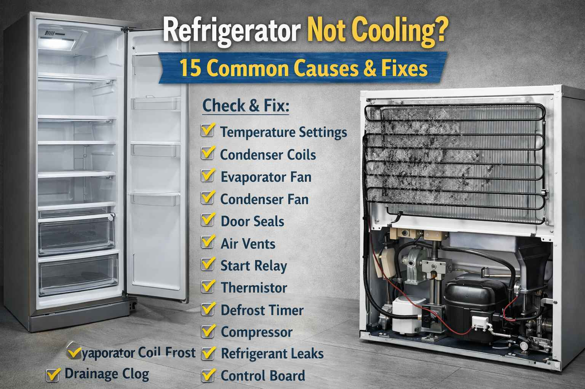

A family from Kambar called me in May 2007. They said "Our Haier refrigerator is not cooling. The freezer is cold but the fridge is warm. Our food is spoiling." I asked them to check the evaporator fan. They opened the freezer and pressed the door switch. The fan was silent. I told them to defrost the freezer first. They defrosted for 6 hours. After restarting, the fan started working. The fridge cooled again. The mother said "You saved our grocery money for the whole month."
Brand: Haier | Problem: Fridge warm, freezer cold | Fix: Defrost freezer, ice on fan
Refrigerator not cooling? This is a serious problem that can lead to food spoilage and waste. In Pakistan's hot climate, a non-working fridge is an emergency. Before calling a technician, try these 15 common fixes. Many cooling problems have simple solutions you can do yourself.
First Thing to Check: If your refrigerator is not cooling, first check if the light comes on when you open the door. If the light is on, power is reaching the fridge. If there is no light, check the power cord and circuit breaker.
A businessman from Kot Addu called me in July 2009. He said "My Dawlance refrigerator is not cooling at all. The compressor is running but the fridge is warm. The back is very hot." I asked him to check the condenser coils at the back. He found they were completely covered in dust and cobwebs. He cleaned them with a brush. After 3 hours, the fridge started cooling. He said "I was about to call an expensive technician. You saved me money and time."
Brand: Dawlance | Problem: Not cooling at all | Fix: Clean dusty condenser coils
Problem: Condenser coils at the back or bottom are covered with dust. This prevents heat from escaping, so the fridge cannot cool properly.
Solutions: Unplug the refrigerator. Locate the coils at the back or behind the bottom kick plate. Use a coil brush or vacuum with a brush attachment. Clean thoroughly. Do this every 6 months, or every 3 months in dusty Pakistani cities.
Problem: The evaporator fan in the freezer circulates cold air to the fridge section. If it is not working, the freezer gets cold but the fridge stays warm.
Solutions: Open the freezer door and press the door switch to activate the fan. Listen for the fan running. If it is silent, the fan may be faulty or blocked by ice. If there is ice, defrost the freezer completely. If the fan still does not run after defrosting, it may need replacement.
Problem: The condenser fan near the compressor cools the compressor and condenser coils. If it is not working, the compressor overheats and the fridge loses cooling.
Solutions: Unplug the fridge and pull it out from the wall. Listen for the fan running when the compressor runs. Check if the fan is blocked by debris. Clean the fan blades. If the fan does not run, it may need replacement.
A housewife from Rajanpur called me in September 2011. She said "My Samsung refrigerator is making a clicking sound and not cooling. The compressor tries to start but clicks off after a few seconds." I asked her to check the start relay. She removed the small black box on the compressor. She shook it and heard rattling inside. She bought a new relay for 400 rupees. She replaced it. The compressor started working. She said "I fixed my own fridge. I feel so empowered."
Brand: Samsung | Problem: Clicking, not cooling | Fix: Replace faulty start relay
Problem: The thermostat is set too warm, or someone accidentally changed the setting.
Solutions: Check the temperature dial or digital setting. The recommended temperature is 2 to 4 degrees Celsius for the fridge and minus 18 degrees Celsius for the freezer. Adjust to a colder setting and wait 24 hours. Use an appliance thermometer to verify the temperature.
Problem: Worn or dirty door seals let cold air escape and warm air enter. The fridge runs constantly but never gets cold.
Solutions: Inspect the door gaskets for cracks, tears, or gaps. Clean the gaskets with mild soap and water. Test the seal by closing the door on a piece of paper. If the paper pulls out easily, the seal is weak. Replace damaged gaskets.
Problem: Excessive frost blocks airflow from the freezer to the fridge. This is common in manual defrost models or when the defrost system fails.
Solutions: If the frost is more than 1/4 inch thick, defrost completely. Remove all food, unplug the fridge, and leave the doors open. Place towels to catch water. After complete thawing, clean and restart. If frost returns quickly, the defrost system may be faulty.
A doctor from Dadu called me in March 2013. He said "My LG refrigerator is not cooling. The freezer is very cold but the fridge is warm. I cleaned the coils but still not working." I asked him to check the air vents. He found that food packages were blocking the air vents in the freezer. He rearranged the food. The cold air started flowing into the fridge. He said "I am a doctor but I did not know about air vents. Thank you for teaching me."
Brand: LG | Problem: Blocked air vents | Fix: Rearrange food, clear vents
Problem: The start relay helps the compressor start. If it fails, the compressor will not run at all.
Solutions: Locate the compressor at the back. It is a black cylinder with wires. Find the small black box on the side of the compressor. This is the start relay. Remove it and shake it. If it rattles, it is bad. Replace it with an exact match. This is an easy and cheap fix.
Problem: Too much food is blocking the air vents. Cold air cannot circulate properly.
Solutions: Check the air vents inside the fridge, usually at the back. Ensure nothing is blocking the vents. Do not overpack the fridge. Leave space for air circulation. Rearrange the food to allow airflow.
Problem: Adding large amounts of hot food raises the internal temperature significantly.
Solutions: Always cool hot food to room temperature before refrigerating. For large quantities, divide into smaller containers. Allow 24 hours for the temperature to stabilize.
Problem: Refrigerant level is low due to a leak in the sealed system. The compressor runs but there is no cooling.
Symptoms: The compressor runs continuously, both the fridge and freezer are warm, and you may see oil stains indicating a leak.
Solutions: This requires professional service. A technician will find the leak, repair it, and recharge the gas. This cannot be done yourself. It requires special tools and certification.
A shopkeeper from Khairpur Nathan Shah called me in December 2015. He said "My PEL refrigerator is not cooling. The compressor is running but both fridge and freezer are warm. There is an oil stain under the fridge." I told him this sounds like a refrigerant leak. He called a technician. The technician found a small leak in the evaporator. He repaired it and recharged the gas. The fridge started cooling. The shopkeeper said "Thank you for your honest advice. I would have wasted time trying to fix it myself."
Brand: PEL | Problem: Refrigerant leak | Fix: Technician repair leak and recharge
Problem: The compressor is not running, or it is running but not pumping properly.
Symptoms: No compressor sound, or the compressor is hot but not cooling, or the compressor is clicking on and off.
Solutions: Check if the compressor is warm. It should be warm when running. Listen for humming. If it is humming but not starting, the capacitor may be bad. Check the start relay. If the compressor is dead, replacement is expensive. Consider buying a new fridge.
Problem: The electronic control board is not sending proper signals to the components.
Symptoms: Erratic operation, error codes on the display, some functions work but others do not.
Solutions: Try resetting by unplugging for 5 minutes and plugging back in. If the error persists, the board may need replacement. Call a technician for diagnosis.
Problem: Food packages are blocking the air vents, preventing cold air from reaching the fridge section.
Solutions: Locate the vents, usually at the back of the fridge and freezer. Rearrange the food to keep the vents clear. Do not push items too far back.
Problem: The refrigerator is placed in a very hot location, such as near an oven, in direct sunlight, or in a poorly ventilated area.
Solutions: Ensure at least 2 to 3 inches of clearance around the fridge for airflow. Move it away from heat sources. Improve room ventilation. In extreme heat above 45 degrees, it is normal for the fridge to struggle. This is not a fault.
Problem: The refrigerator is over 10 to 15 years old and may simply be worn out. Compressor efficiency drops and insulation degrades over time.
Solutions: If the fridge is old and repairs are costly, consider replacement. New fridges are much more energy efficient. If the repair cost is more than 50 percent of a new fridge, replace it.
Pakistan Specific Tips: Use a voltage stabilizer to protect the compressor and PCB from voltage fluctuations. Clean coils more often in dusty cities. During load shedding, keep the fridge door closed to maintain temperature. In extreme heat above 45 degrees, it is normal for the fridge to run longer. For professional service, use authorized service centers.
Safety Warning: Always unplug the refrigerator before any cleaning or inspection. For compressor issues, sealed system problems, or refrigerant leaks, always call certified technicians.